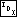

| 11.5.3 Step 3: Update Balance Factors |  |
Updating balance factors works exactly the same way as in unthreaded AVL deletion (see Deleting an AVL Node Step 3 - Update).
438. <Steps 3 and 4: Update balance factors and rebalance after RTAVL deletion 438> = assert (k > 0); while (–k > 0)
{ struct rtavl_node *y = pa[k]; if (da[k] == 0)
{ y->rtavl_balance++; if (y->rtavl_balance == +1) break; else if (y->rtavl_balance == +2)
{ <Step 4: Rebalance after RTAVL deletion in left subtree 439> } }
else
{ y->rtavl_balance–; if (y->rtavl_balance == -1) break; else if (y->rtavl_balance == -2)
{ <Step 4: Rebalance after RTAVL deletion in right subtree 440> } } }
This code is included in 429.